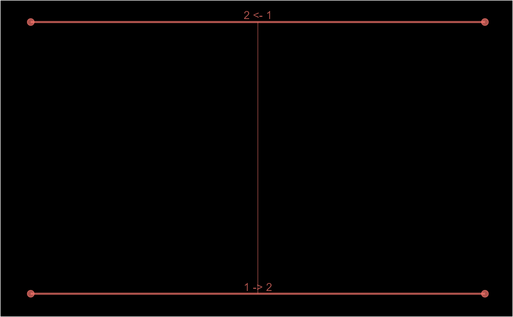

Create schema diagrams for number_line, epid, pid and pane objects.
schema(x, ...) # S3 method for number_line schema(x, show_labels = c("date", "case_overlap_methods"), ...) # S3 method for epid schema( x, title = NULL, show_labels = c("length_arrow"), show_skipped = TRUE, show_non_finite = FALSE, theme = "dark", seed = NULL, custom_label = NULL, ... ) # S3 method for pane schema( x, title = NULL, show_labels = c("window_label"), theme = "dark", seed = NULL, custom_label = NULL, ... ) # S3 method for pid schema( x, title = NULL, show_labels = TRUE, theme = "dark", orientation = "by_pid", seed = NULL, custom_label = NULL, ... )
Arguments
| x | |
|---|---|
| ... | Other arguments. |
| show_labels |
|
| title |
|
| show_skipped |
|
| show_non_finite |
|
| theme |
|
| seed |
|
| custom_label |
|
| orientation |
|
Value
ggplot objects
Details
A visual aid to describing the data linkage (links), episode tracking (episodes) or partitioning process (partitions).
Examples
#> Warning: replacing previous import 'vctrs::data_frame' by 'tibble::data_frame' when loading 'dplyr'#> Warning: `l` and `r` have different classes. They may need to be reconciled.